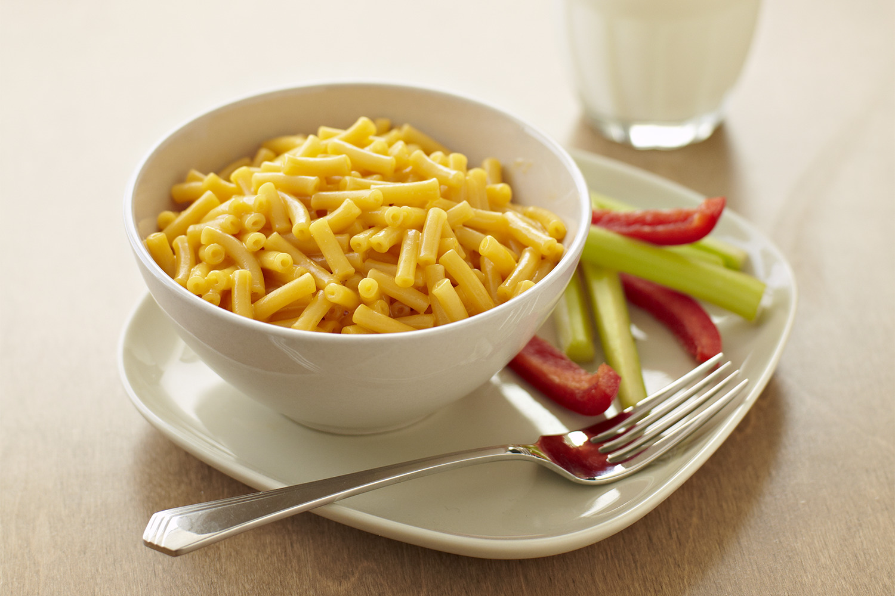

Easy Mac

Description:
When on a budget, one can't go wrong with a nice bowl of Mac & Cheese. When you are pressed for time and cash, Kraft is one of the best options. The marriage of macaroni noodles and cheese powder that becomes a delicious sauce.
Pro-Tip:
If you are feeling fancy Velveeta and Shells is a more gourmet selection.
Ingredients:
- 6 - Cups of Water
- 1 - Box of Kraft Mac & Cheese
- 4 - TBSPs (Tablespoons) of Butter
- 1 - 1/2 Cup of Milk
Instructions:
- In a pot, bring the 6 cups of water to a boil.
- Add macaroni noodles to water. Cook time is around 7 mins and 30 secs.
- Remove pot from heat and strain noodles.
- Add butter, milk, and cheese package which comes in the box to the macaroni noodles.
- Mix and until incorporated.
- Serve in your cleanest bowl.
Home